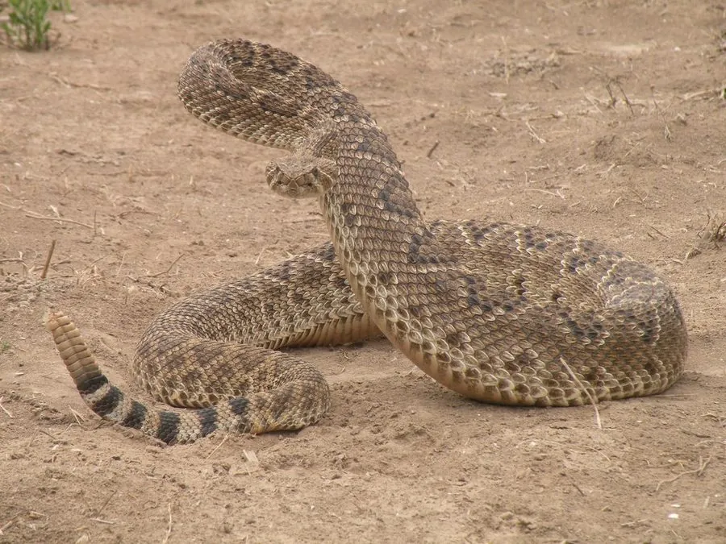

爬行动物 · 动物界
西部菱斑响尾蛇 Crotalus atrox

北美西南部常见的大型响尾蛇，背部有醒目的菱形斑纹，尾端角质响环可发出沙沙声警告入侵者，是当地最常见的毒蛇之一。
- 分类
- 门脊索动物门纲爬行纲目有鳞目科蝰科属响尾蛇属
- 栖息环境
- 美国西南部与墨西哥北部的荒漠、干旱草原和岩质峡谷
- 地理分布
- 美国得克萨斯、亚利桑那、新墨西哥等州及墨西哥北部
- 保护级别
- IUCN 无危（LC）；非中国原产，在中国无保护级别
物种志
西部菱斑响尾蛇体长 1.2–2.1 米，体色灰褐至浅棕，背部沿中线排列着一串菱形深色斑块，斑块边缘镶浅色鳞片；头部呈三角形，颊窝可感知恒温猎物的红外辐射；尾部末端由角质节组成的响环在蜕皮时增加一节，抖动时发出沙沙声。
它分布于美国西南部和墨西哥北部的干旱草原、荒漠与峡谷，多在夜间或晨昏活动，夏季酷热时转为夜行；以鼠类、兔、鸟类和蜥蜴为食，靠毒液麻痹猎物。它是卵胎生蛇类，交配后妊娠约 6–7 个月，每胎产 10–20 条幼蛇，幼蛇出生即可独立生活。响尾蛇毒液含出血毒素，被咬会出现剧痛和肿胀，须立即就医；它在控制啮齿动物数量方面有重要作用，当地多提倡避让而非捕杀。
形态与习性
- 食性鼠类、兔、鸟类和蜥蜴
- 体长1.2–2.1 m
- 体重约 0.5–2 kg
- 寿命野外约 15–20 年
- 繁殖卵胎生，妊娠 6–7 个月，每胎 10–20 条
- 毒性出血毒素为主，被咬可致剧痛肿胀，需立即就医
- 防御抖动尾端的角质响环发出警告声
趣味知识
- 响尾蛇的响环由多次蜕皮残留的角质节叠成，每蜕一次皮可能增加一节。
- 它头部的颊窝能感知细微温差，可在黑暗中锁定温血猎物。
- 响尾蛇幼蛇的尾环尚未成形，只能发出细微的嗡嗡声。